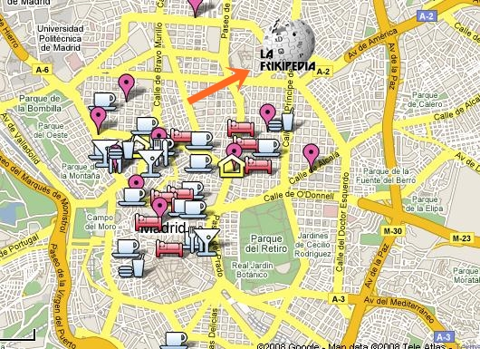

De: La Frikipedia, la enciclopedia extremadamente seria.
¡Bienvenido a el Gps, te encontramos porque te encontramos! Actualmente IP anónima te hemos rastreado en cuanto te registraste y ahora mismo te encuentras en donde marca la flecha naranja (en la imagen).

Atención - Si la imagen marca en lugar en donde no estas en el momento llama a nuestras operadoras que siempre estan disponibles
Autor(es):
Gñapero Solitario
Gvg
Genericool
Not so friki
AztroCat01
Frikipedia 2005-2016, Licencia GFDL 1.2 - Extraído por FrikiLeaks
 De: La Frikipedia, la enciclopedia extremadamente seria.
De: La Frikipedia, la enciclopedia extremadamente seria.